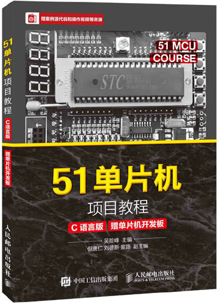

首页 > 书籍下载
《51单片机项目教程(C语言版)》吴险峰PDF下载（高清完整版）
|  | 作者：吴险峰 |
| 出版时间：2016年08月01日 | |
| 出版社：人民邮电出版社 | |
| 书号ISBN：9787115425409 | |
| 总页数：256 |
这是一本汇集了 26 个实践项目的单片机书籍，项目难度逐渐递增，从最简单的“点灯”（点亮一个 LED 灯）开始，适合有 51 单片机基础、想动手做项目的读者。
这里提供的是《51单片机项目教程(C语言版)》吴险峰的高清 PDF 下载，内容完整，附带目录标签。
这本书的 26 个项目里，前 12 个是比较基础的，在 51 开发板上就可以完成；后面 14 个项目是拓展内容，需要 51 开发板搭配传感器套件完成。
下面是一位购买了这本书的读者给出的评价：
拿到手就测试了一下，研究好一会儿才烧成功，边学边试验，很适合初学者入门。
另一位读者也给出了好评：挺不错的，书里以实践为主，简明易懂，我之前有学过一点简单的C，没有实践过，这次正好有机会，花了三天时间开发了一个有闹钟，秒表和定时器的时钟，非常不错。
书籍目录
- 项目1 构建单片机开发环境 1
- 1.1 项目分析 2
- 1.2 技术准备 2
- 项目2 了解开发板 8
- 2.1 项目分析 9
- 2.2 技术准备 9
- 项目3 点亮一个LED 11
- 3.1 项目分析 12
- 3.2 技术准备 12
- 3.3 项目实施 26
- 项目４ 流水灯实验 29
- 4.1 项目分析 30
- 4.2 技术准备 30
- 4.3 项目实施 35
- 项目5 蜂鸣器实验 38
- 5.1 项目分析 39
- 5.2 技术准备 39
- 5.3 项目实施 43
- 项目6 LED显示器静态显示 46
- 6.1 项目分析 47
- 6.2 技术准备 47
- 6.3 项目实施 49
- 项目7 LED显示器动态显示 51
- 7.1 项目分析 52
- 7.2 技术准备 52
- 7.3 项目实施 55
- 项目8 独立键盘输入 58
- 8.1 项目分析 59
- 8.2 技术准备 59
- 8.3 项目实施 61
- 项目9 单片机中断系统 63
- 9.1 项目分析 64
- 9.2 技术准备 64
- 9.3 项目实施 69
- 项目10 单片机定时器 71
- 10.1 项目分析 72
- 10.2 技术准备 72
- 10.3 项目实施 77
- 项目11 串口通信 79
- 11.1 项目分析 80
- 11.2 技术准备 80
- 11.3 项目实施 85
- 项目12 综合实验：秒表 87
- 12.1 项目分析 88
- 12.2 技术准备 88
- 12.3 项目实施 88
- 项目13 LCD显示器静态显示字符 93
- 13.1 项目分析 94
- 13.2 技术准备 94
- 13.3 项目实施 97
- 项目14 红外遥控 102
- 14.1 项目分析 103
- 14.2 技术准备 103
- 14.3 项目实施 109
- 项目15 简易计算器（LED显示器显示） 117
- 15.1 项目分析 118
- 15.2 技术准备 118
- 15.3 项目实施 118
- 15.4 技术拓展 120
- 项目16 音乐喷泉 122
- 16.1 项目分析 123
- 16.2 技术准备 123
- 16.3 项目实施 124
- 16.4 技术拓展 125
- 项目17 防盗报警器 127
- 17.1 项目分析 128
- 17.2 项目准备 128
- 17.3 项目实施 129
- 18.1 项目分析 132
- 18.2 技术准备 132
- 18.3 项目实施 134
- 18.4 技术拓展 136
- 项目19 温度计显示 138
- 19.1 项目分析 139
- 19.2 技术准备 139
- 19.3 项目实施 145
- 19.4 技术拓展 148
- 项目20 测距显示 150
- 20.1 项目分析 151
- 20.2 技术准备 151
- 20.3 项目实施 153
- 20.4 技术拓展 158
- 项目21 步进电机控制 161
- 21.1 项目分析 162
- 21.2 技术准备 162
- 21.3 项目实施 163
- 21.4 技术拓展 170
- 项目22 A/D-D/A模块 177
- 22.1 项目分析 178
- 22.2 技术准备 178
- 22.3 项目实施 184
- 22.4 技术拓展 190
- 项目23 火焰报警器 193
- 23.1 项目分析 194
- 23.2 技术准备 194
- 23.3 项目实施 194
- 23.4 技术拓展 200
- 项目24 人体红外感应灯 202
- 24.1 项目分析 203
- 24.2 技术准备 203
- 24.3 项目实施 205
- 24.4 技术拓展 210
- 项目25 无线模块 211
- 25.1 项目分析 212
- 25.2 技术准备 212
- 25.3 项目实施 216
- 25.4 技术拓展 224
- 项目26 智能风扇系统（综合实验） 225
- 26.1 项目分析 226
- 26.2 技术准备 226
- 26.3 项目实施 226
书籍下载
一键登录，免费下载完整版 PDF，文件名称：《51单片机项目教程(C语言版)》吴险峰.pdf